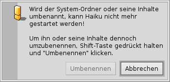
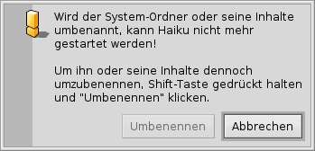

Deutsch
Deutsch Català
Català English
English Español
Español Français
Français Italiano
Italiano Magyar
Magyar Polski
Polski Português
Português Português (Brazil)
Português (Brazil) Română
Română Slovenčina
Slovenčina Suomi
Suomi Svenska
Svenska 中文 ［中文］
中文 ［中文］ Русский
Русский Українська
Українська 日本語
日本語Dateisystem Layout
In Haikus Dateisystem werden nach Möglichkeit allgemein verständliche Datei- und Ordnernamen verwendet, um den Benutzer nicht unnötig im Dunkeln zu lassen. Dateien und Ordner, die für das Funktionieren des Systems wichtig sind, werden gegen zufällige Änderungen durch einen der folgenden Hinweise geschützt:
 

Der zweite Hinweis erscheint wenn versucht wird etwas in der Systemhierarchie umzubenennen oder zu löschen. Der "" Button kann nur geklickt werden während die SHIFT Taste gehalten wird.
Grundsätzlich verzweigt sich das Hauptverzeichnis der Bootpartition in zwei Äste:
| /boot/system/ | Hier liegen die Systemdateien und die Anwendungen/Pakete, auf die alle Benutzer Zugriff haben. | |
| /boot/home/ | Das ist der persönliche Ordner des Benutzers mit all seinen Daten und Einstellungen. Außerdem liegen hier die Anwendungen/Pakete auf die andere Benutzer keinen Zugriff haben. |
Solange Haiku noch nicht mehrbenutzerfähig ist, hat diese Aufteilung in gemeinsame und persönliche Anwendungen/Pakete keine Auswrkungen. Schließlich gibt es nur einen Benutzer mit nur einem Home Ordner. Weil Haiku aber irgendwann auch mehrere Benutzerkonten unterstützen wird, ist es sinnvoll sich schon jetzt daran zu gewöhnen.
 Der System Ordner - /boot/system/
Der System Ordner - /boot/system/
Bei Haikus Vorgänger BeOS hieß dieser Ordner /boot/beos/. Ihn trifft man immer mal wieder in älterer Dokumentation an (z.B. im original BeBook).
Die meisten Ordner in /boot/System/ sind schreibgeschützt. Das ist auch vernünftig, schließlich befinden sich hier Dateien, die wichtig für das funktionieren von Haiku sind und daher für (zufälligen) Änderungen geschützt werden müssen. Die einzigen vom Benutzer veränderbaren Ordner sind:
| /boot/system/cache/ | Enthält Cache-Dateien und den Ordner für temporäre Dateien, auf den /tmp/ verlinkt ist. | |
| /boot/system/non-packaged/ | Enthält die Ordner-Hierarchie für Dateien, die nicht Teil eines .hpkg sind (wahrscheinlich aus einem alten BeOS Archiv). | |
| /boot/system/packages/ | Neben den hier liegenden Haiku System-Paketen können hier gemeinsam von allen Benutzern genutzte Pakete hinzugefügt und entfernt werden. | |
| /boot/system/settings/ | Enthält systemweite Einstellungen. | |
| /boot/system/var/ | Enthält Log-Dateien wie das syslog (wichtig bei der Fehlersuche) und standardmäßig die Auslagerungsdatei. |
Weitere Informationen zum packages und non-packaged Ordner finden sich unter Anwendungen.
Der Home Ordner - /boot/home/
Dieser Ordner gehört dem Benutzer. Hier können Ordner und Dateien nach Lust und Laune erstellt und gelöscht werden. (Übrigens, die Tilde ("~") ist eine Abkürung für den Home Ordner, damit man im Terminal nicht immer "/boot/home/" schreiben muss).
Dateien, auf die später mal in einer Mehrbenutzer-Umgebung die anderen Benutzer zugreifen können sollen, müssen außerhalb von /boot/home/ angelegt werden. Zum Beispiel könnte man einen Ordner /boot/alle-Benutzer/ anlegen und die Sachen dort ablegen.
| ~/Desktop/ | Hier befinden sich die Dateien, die auf dem Desktop liegen. Ein Doppelklick öffnet den Ordner nicht, weil er ja bereits geöffnet ist. Falls die Datei-Icons mal von Fenstern verdeckt sind, kann man einfach mal schnell die Arbeitsfläche wechseln. Natürlich ist auch eine Navigation über Untermenüs per Rechtsklick möglich. | |
| ~/mail/ | Standardmäßig werden hier alle Mails abgelegt. | |
| ~/people/ | Standardmäßig werden hier alle Kontaktdateien abgelegt, siehe Kontakte. | |
| ~/queries/ | Queries werden generell für 7 Tage in diesem Ordner gespeichert, danach werden sie automatisch gelöscht. |
Der Ordner /boot/home/config/ ist besonders: Genauso wie /boot/system/ befindet der sich größtenteils unter der Kontrolle des Paketmanagments und daher schreibgeschützt. Und er enthält auch die gleichen vom Benutzer beschreibbaren Ordner:
| ~/config/packages/ | Hier können Pakete hinzugefügt und entfernt werden, auf die die anderen Benutzer keinen Zugriff haben. | |
| ~/config/non-packaged/ | Enthält die Ordner-Hierarchie für Dateien, die nicht Teil eines .hpkg sind (wahrscheinlich aus einem alten BeOS Archiv) und auf die die anderen Benutzer keinen Zugriff haben. | |
| ~/config/settings/ | Dieser Ordner enthält die eigenen Einstellungen für alle Anwendungen, sowie einige Systemkonfigurationen. Einige Anwendungen verwalten ihre Einstellungen in eigenen Unterverzeichnissen, andere schreiben ihre Einstellungsdatei direkt in diesen Ordner. |
Weitere Informationen zum packages und non-packaged Ordner finden sich unter Anwendungen.
Hier einige der interessanteren Unterordner von ~/config/settings/:
| boot/ | Dieser Ordner enthält User Skripte die vor oder nach dem Hoch- bzw. Herunterfahren des Systems ausgeführt werden. | |
| boot/launch/ | In diesem Ordner enthaltene Verknüpfungen zu Programmen oder Dokumenten werden automatisch beim jedem Hochfahren geöffnet. | |
| beos_mime/ | In dieser MIME Datenbank sammelt Haiku all die verschiedenen Dateitypen und ihre Einstellungen. | |
| deskbar/menu/ | Hierher kopierte oder verlinkte Dateien/Ordner/Queries erscheinen im Menü der Deskbar. | |
| kernel/drivers/ | Hier gibt es vor allem eine interessante Datei: kernel bietet einige hardwarenahe Konfigurationen, wie Auschalten von SMP, Aktivieren von Debugging über die serielle Schnittstelle oder Einschalten von erweitertem Power-Management. Eine Konfigurationszeile wird aktiviert, indem das Rautesymbol "#" entfernt wird. Hier ist Vorsicht angeraten! | |
| Tracker/ | Neben diversen Konfigurationsdateien für den Tracker, finden sich hier einige interessante Unterverzeichnisse: | |
| DefaultFolderTemplate/ | Jedes neu erstellte Verzeichnis erbt die Fenstergröße und das Layout der angezeigten Attribute dieses Ordners. | |
| DefaultQueryTemplates/ | Das Layout von Query-Ergebnissen lässt sich je nach Dateityp individuell definieren. Siehe Query: Das Ergebnisfenster. | |
| Go/ | Hier verknüpfte Ordner zu bevorzugten Speicherorten erscheinen z.B. in Öffnen- und Speicherdialogen. Siehe Haikus GUI: Favoriten und kürzliche benutzte Ordner. | |
| Tracker New Template/ | Hier angelegte Dateien eines bestimmten Dateityps sind sofort in Trackers Menü verfügbar. Siehe Tracker: Arbeiten mit Dateien. |